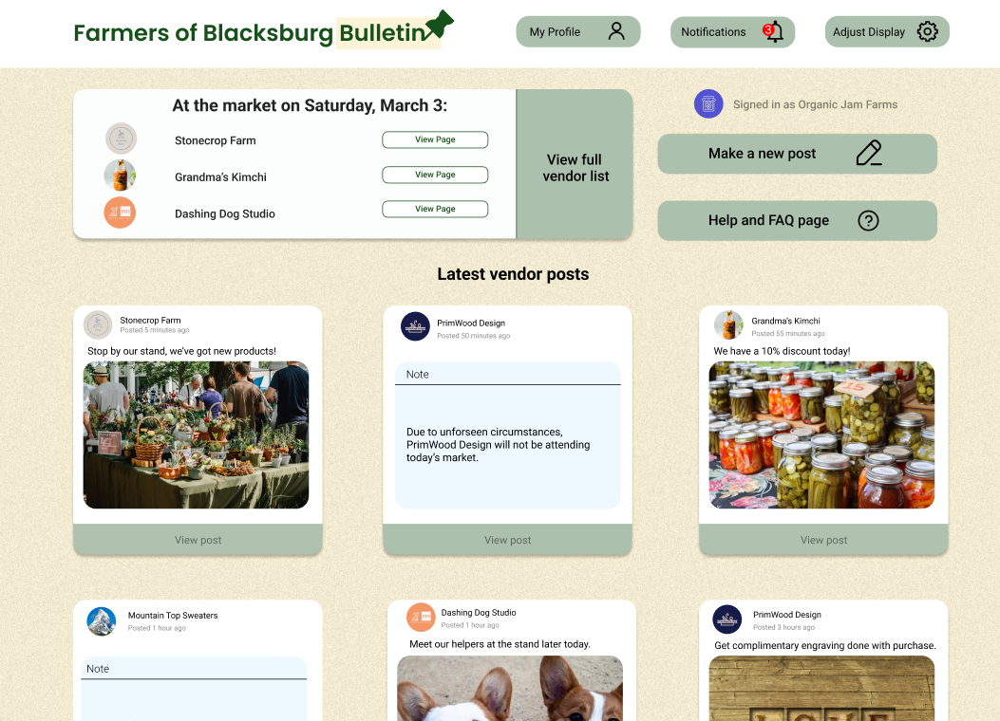

Problem
In Blacksburg, VA, there is a local farmers market that is typically held every week, with a variety of small-business owners and vendors. Aside from their own personal websites, and the Blackburg Farmer's Market Website, which is rarely updated, there is no way for vendors to quickly share up-to-date information with all market customers.
Our solution
For simple, straightforward, and accessible communication, we created a virtual bulletin board application called the Farmers of Blacksburg Bulletin, or FOBB, that allows vendors of all ages a comfortable and easy way to share information via text or image posts. The bulletin board is a virtual space where vendors can post any information they please and customers can view and comment on the posts, similar to if there was an actual bulletin board for the Blacksburg Farmers Market.
The process
A contextual analysis was conducted via observations and interviews, and then design-informing models, or DIMs, were created based on the data collected. We had noticed a challenge in the information flow in the farmers market environment and decided to tackle the issue of lack of communication outside market hours between vendors and market goers. On the right is a flow model DIM examining the total farmers market environment and prominent barriers.
Design ideation and development
A key factor in deciding how to address the barriers would be to visualize the types of vendors in the market. Typically, vendors at the market ranged in age from old to young, meaning an effective design would incorporate simple features for older vendors to adopt. We crafted the idea of a virtual bulletin board based on that notion and thought of a social application that was similar to Instagram but simplified and optimized for the farmers market itself. Wireframe images created in Figma were developed, informed by the brainstorming process and extraction of the work activity affinity diagram.
Challenges and next steps
Creating a technology that all vendors can adopt is a huge factor in whether our project is successful or not, since based on our interviews older vendors do not always intuitively understand how to use social media applications. We designed the FOBB to specifically address this issue and ensure it was very straightforward and similar to what older generations would be accustomed to, such as posting on a real bulletin board. Our team’s next steps are to develop a refined prototype and pitch the idea to the Blackburg Farmers Market team for further feedback and potential implementation.
Visual identity and branding elements used for the FOBB.
A flow model DIM of the farmers market. Created using FigJam.

Our work activity affinity diagram based on contextual analysis of the market, click here for a better view. Created using FigJam.
Wireframes of the FOBB, click here for a better view and more frames. Created using Figma.
A mockup of the homepage from our FOBB project. View the full mockup here. Created using Figma.